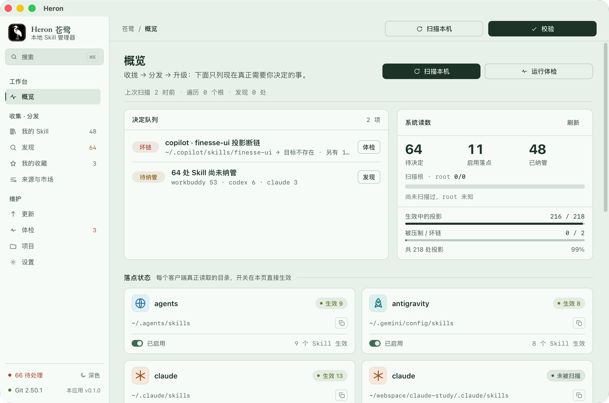
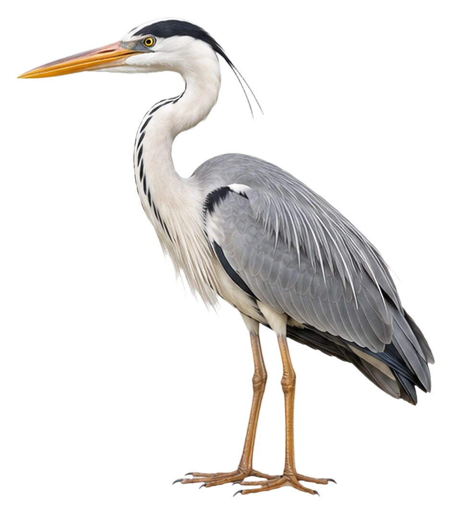
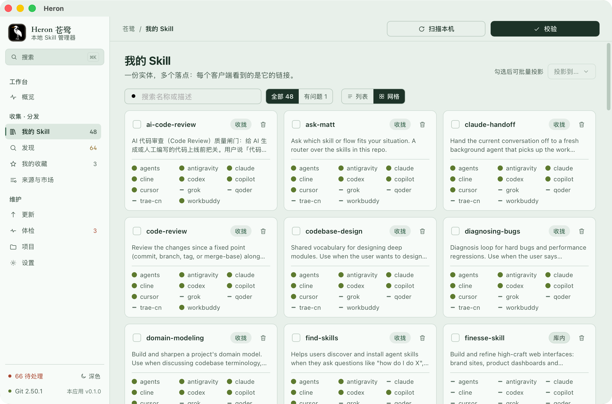
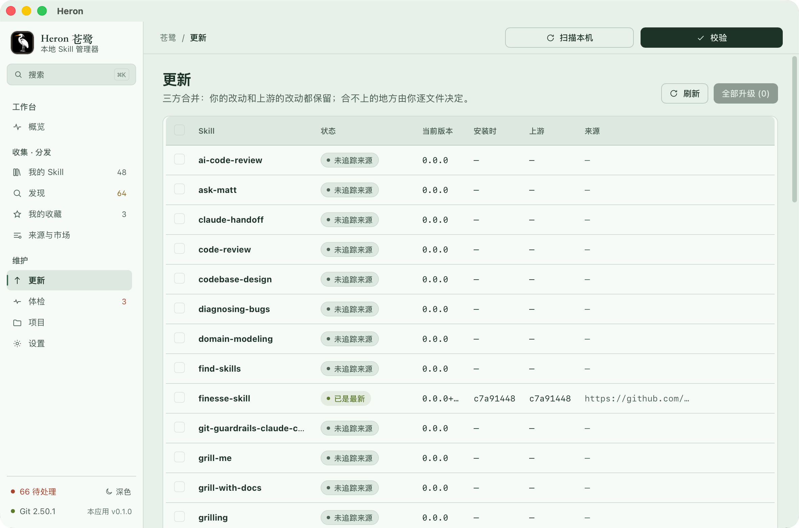
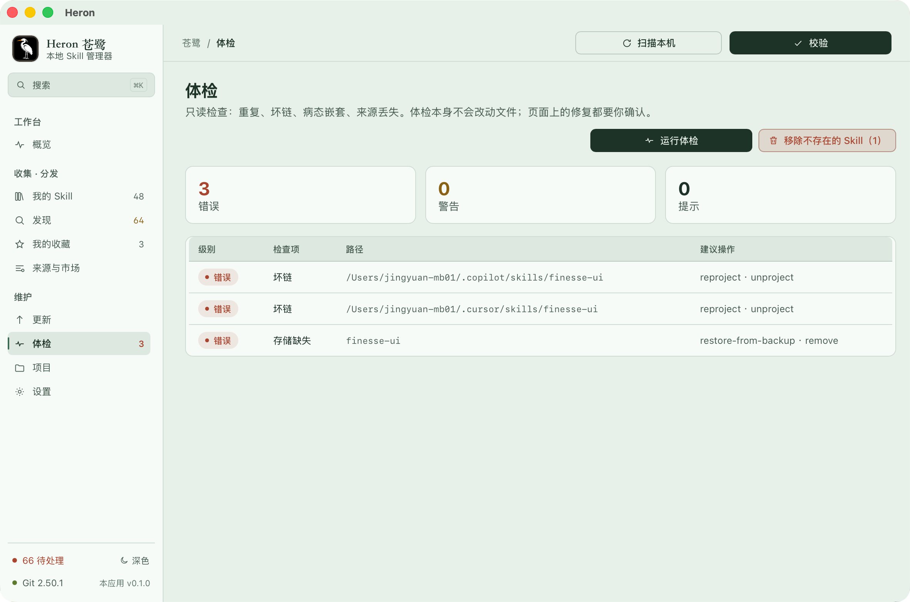

ISSUE 01 · SINGLE SOURCE OF TRUTH
静立一处，
注视整片水面。
Heron 把散落在 Claude Code、Codex、Cursor、Antigravity 与各个工程目录里的 Agent Skill 收拢成一份受 Git 版本管理的实体，再按你的意愿分发，让升级回到一条命令。

FIG 01. 概览行动中心（林墨 · 浅色）
48 纳管 · 216 生效

CHAPTER 01
问题与解法
问题与解法
当 Skill 成为工程资产，复制粘贴不再体面
面向同时使用多款 AI 编码工具的开发者，Heron 替换掉所有零散的手工软链与同步脚本。
| 痛点场景 | 传统手工做法 | Heron 的系统解法 |
|---|---|---|
| 目录散落与重复拷贝 | 在四五个隐藏目录间手工复制，改一处其余全过时 | heron adopt先备份再哈希去重，收拢至 ~/.heron/skills/，原位替换为受管链接 |
| 生效状态全靠猜 | 软链失效或同名压制时静默失败，排错无从下手 | heron verify四态严格判定：生效中 / 未被扫描 / 被压制 / 坏链，并支持 4 种投影模式 |
| 升级覆盖本地定制 | 上游更新后整目录覆盖，手调的提示词每次重打补丁 | heron upgradePer-Skill 独立 Git 仓库 + git merge-tree 三方合并，冲突可视化逐文件解决 |
| 团队环境持续漂移 | 新人拉代码缺少项目 Skill，靠口头同步版本 | heron.lock项目根目录一键导出与复现，成员环境精准对齐 |
CHAPTER 02
界面图录
界面图录
克制、诚实、一目了然的桌面工作台
内置默认暖纸、林墨、暮色、晚晴四套东方色调，深浅双模式自由切换。




CHAPTER 03
架构与契约
架构与契约
不越界、不隐瞒、不破坏
四态投影，零提权
macOS 默认 symlink，Windows 默认 junction（普通用户免提权），另备 pointer 代理文件与带漂移检测的 copy。
先备份，再事务
任何目录迁移前先完整备份至受管数据目录；遇到未纳管目录或外部漂移立即报 E_NOT_MANAGED / E_DRIFTED 停机保护。
GUI 与 CLI 完全同构
十余个 Rust Crate 严格单向分层，桌面端与命令行共用同一套 heron-service 内核，一切操作皆可 Dry-Run 与脚本化。
# 1. 扫描本机已知客户端与项目目录 heron scan # 2. 查看磁盘上尚未纳管的 Skill heron detected # 3. 预览并一键安全收拢（先备份，再去重） heron adopt --all --dry-run heron adopt --all